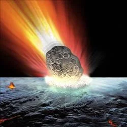

Asteroides Destacados

99942 Apophis
Pasará cerca de la Tierra en 2029. Aunque se pensaba que podría impactar, ahora se sabe que no representa amenaza.
2011 AG5
Este asteroide, de 140 metros, pasó muy cerca de la Tierra en 2011. Su tamaño lo hace menos peligroso que otros más grandes.

2004 MN4
Cruza la órbita de la Tierra y será observado en el futuro debido a su trayectoria cercana.